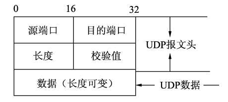
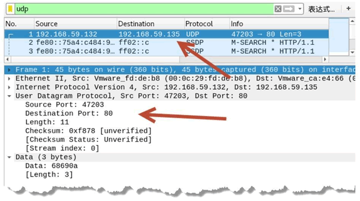
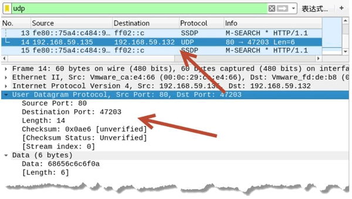

首页 > 编程笔记
UDP报文格式详解
相比 TCP 协议，UDP 协议的报文结构相对简单。本节将详细讲解 UDP 报文的格式。
UDP 报文格式如图所示。
【实例】已知主机 A 的 IP 地址为 192.168.59.132，主机 B 的 IP 地址为 192.168.59.135。分别在这两个主机上建立 UDP 服务器和客户端，并进行连接，监听指定端口上的通信信息。具体步骤如下：
1) 在主机 A 上建立 UDP 服务器，设置监听端口为 80，执行命令如下：
2) 在主机 B 上建立 UDP 客户端，连接 UDP 服务器端 80 端口，执行命令如下：
3) 与 UDP 服务器端进行通信，在客户端输入 hi：
4) 在服务端可以看到客户端发来的消息如下：
5) 为了验证发送的消息使用的是 UDP 协议，可以通过抓包进行查看，如图所示。
在 User Datagram Protocol 部分中显示了 UDP 数据包的详细信息。可以看到源端口、目的端口，以及包长度为 11 字节、校验值为 0xf878 等信息。
6) 当服务器向客户端发送消息时，使用的也是 UDP 协议。例如，在服务器端回复客户端，输入 hello：
7) 通过抓包验证使用的是 UDP 协议，如图所示。
UDP 报文格式
每个 UDP 报文分为 UDP 报头和 UDP 数据区两部分。报头由 4 个 16 位长（2 字节）字段组成，分别说明该报文的源端口、目的端口、报文长度和校验值。UDP 报文格式如图所示。

UDP 报文中每个字段的含义如下：
- 源端口：这个字段占据 UDP 报文头的前 16 位，通常包含发送数据报的应用程序所使用的 UDP 端口。接收端的应用程序利用这个字段的值作为发送响应的目的地址。这个字段是可选的，所以发送端的应用程序不一定会把自己的端口号写入该字段中。如果不写入端口号，则把这个字段设置为 0。这样，接收端的应用程序就不能发送响应了。
- 目的端口：接收端计算机上 UDP 软件使用的端口，占据 16 位。
- 长度：该字段占据 16 位，表示 UDP 数据报长度，包含 UDP 报文头和 UDP 数据长度。因为 UDP 报文头长度是 8 个字节，所以这个值最小为 8。
- 校验值：该字段占据 16 位，可以检验数据在传输过程中是否被损坏。
分析 UDP 数据包
客户端与服务器建立连接后进行通信，除了使用 TCP 协议外，还可以使用 UDP 协议。netwox 工具提供了相关模块，用于建立 UDP 服务器和 UDP 客户端，实现基于 UDP 协议的数据交互。【实例】已知主机 A 的 IP 地址为 192.168.59.132，主机 B 的 IP 地址为 192.168.59.135。分别在这两个主机上建立 UDP 服务器和客户端，并进行连接，监听指定端口上的通信信息。具体步骤如下：
1) 在主机 A 上建立 UDP 服务器，设置监听端口为 80，执行命令如下：
root@daxueba:~# netwox 90 -P 80
执行命令后，没有任何输出信息，但是成功建立了 UDP 服务器端。2) 在主机 B 上建立 UDP 客户端，连接 UDP 服务器端 80 端口，执行命令如下：
root@daxueba:~# netwox 88 -i 192.168.59.135 -p 80
执行命令后，没有任何输出信息，但是成功连接到了 UDP 服务器端，这里可以输入通信内容。3) 与 UDP 服务器端进行通信，在客户端输入 hi：
root@daxueba:~# netwox 88 -i 192.168.59.135 -p 80
hi
4) 在服务端可以看到客户端发来的消息如下：
root@daxueba:~# netwox 90 -P 80
hi
5) 为了验证发送的消息使用的是 UDP 协议，可以通过抓包进行查看，如图所示。

从图中第 1 个数据包可以看到，是 UDP 客户端（源 IP 地址为 192.168.59.132）向 UDP 服务器端（目的 IP 地址为 192.168.59.135）发送的 UDP 数据包，使用的源端口为随机端口 47203，目的端口为 80（UDP 服务器端监听的端口）。在 User Datagram Protocol 部分中显示了 UDP 数据包的详细信息。可以看到源端口、目的端口，以及包长度为 11 字节、校验值为 0xf878 等信息。
6) 当服务器向客户端发送消息时，使用的也是 UDP 协议。例如，在服务器端回复客户端，输入 hello：
root@daxueba:~# netwox 90 -P 80
hi
hello
7) 通过抓包验证使用的是 UDP 协议，如图所示。

从第 14 个数据包可以看到，源 IP 地址为 192.168.59.135，目的 IP 地址为 192.168.59.132，源端口为 80，目的端口为随机端口 47203。该数据包正好是 UDP 服务器回复客户端的 UDP 数据包。在 User Datagram Protocol 部分中可以看到详细信息。关注公众号「站长严长生」，在手机上阅读所有教程，随时随地都能学习。内含一款搜索神器，免费下载全网书籍和视频。

微信扫码关注公众号